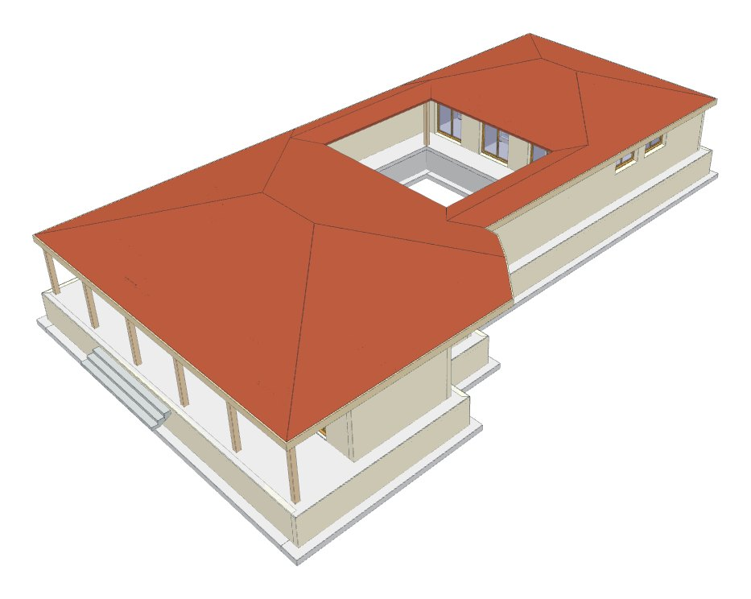

Site de la classe · 2026-2027
BTS MEC
Management économique de la construction
Consignes, outils, tutoriels et fichiers des TP : tout le travail de la classe est ici, accessible depuis n’importe quel ordinateur, en cours comme à distance.

01
Projets et TP
02
Travailler à distance
- Un ordinateur avec Chrome, Edge ou Firefox à jour et une souris : aucun logiciel à installer.
- Vos saisies restent dans le navigateur de votre poste : sauvegardez régulièrement et rendez vos fichiers avant l’heure limite.
- Commencez toujours par le tutoriel du TP : il se termine par une attestation à imprimer en PDF.